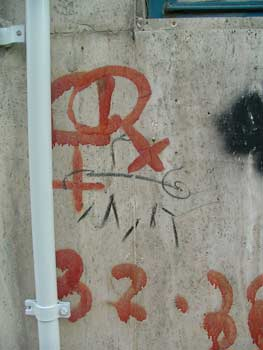

به رغم ماهيت صعودي رشد تكنولوژي، با اين همه هنوز هم ريشه همه تفاوت هاي جنسي نخشكيده، از جمله بارداري. بارداري جنس مؤنث حدود يك سالي طول مي كشد. يك سال مدت كمي نيست. كم وبيش هر زني دست كم يك بار در زندگي اش اين مرحله را مي گذراند، و تاثير اين امر روي مبارزه قدرت بين جنس ها بي معنا نيست و به نفع زنان نيست. مثلا، زنان باردار نمي توانند كار بكنند. از اين رو، در ميان ملت هاي از لحاظ تكنولژي پيشرفته از هر حيث، قدرت جنس ها در جامعه بشري هنوز كاملا يكسان نيست و مردها دست بالا را دارند، تا حدي البته به دليل موقعيت گذشته.
زنان زيادي، بخصوص آن هايي كه در عرصه ژنتيك مبارز هستند، شكايت دارند و راي زني مي كنند براي تساوي جنسيتي كه به فمينيسم هم معروف است (در اواخر قرن بيستم اين قضيه شروع شد). عدالت خواهي آن ها تظاهر صرف است. قضيه پشت پرده، غريزه اصلي حيواني است و به دنبال قدرت بي انتها رفتن، و بيشتر از مساوات مي خواهند مردها را كنترل كنند، صدمه بزنند و نابود كنند، همان كاري كه جنس مذكربه درجات متفاوت در گذشته با آن ها كرده است.
فمينيسم در واقع يك تركيبي پارادوكسي است. در ظاهر براي حقوق زنان مي جنگد ولي در باطن آن حس انتقام جويي ضعيفه هاست كه با ظهور تكنولوژي تقويت شده.
حال كه مي دانيد تصور مشخصي از فمينيسم داريد اين امر شايد مستقيما به تصميم گيري و فكر شما كمك نكند اما درباره اش فكر كردن ممكن است در مورد مسائل بين دو جنس شكل جديدي به نظر شما بدهد و قادر شويد از اين پس مبناي تصميمات و رفتارهاي تان را آگاهي به حقيقت قرار دهيد
از اين پس چه کسی می تواند به ما نه بگويد؟
و حالا تنها چيزي كه براي كار خير انجام دادن لازم دارد نيت خير است.
اعترافات يك تواب ”ان. جي. او“يي ------->
ملت شريف ايران،
اينجانب يكي از عناصر خطرناك باندهاي عنكبوتي موسوم به ”تشكلهاي زنان“ (ان. جي. او.) هستم و پيش از آنكه سعادت پذيرش در كنكور ”دانشگاه اوين“ نصيبم شود با مروري بر حركتهاي ناميمون خود، بدينوسيله در پيشگاه شما مردم، شرمساري و ندامت خود را اعلام ميدارم. باشد تا زنان هموطنم از زندگي نكبتبارم درس گيرند و اغفال نشوند.
ما در اين باندهاي مخوف بهنام تشكلهاي زنان، جهت فعاليتهاي بهظاهر فرهنگي خود بهطور مرتب و مخفيانه در فرهنگسراها ـ كه نام شناسنامهايشان افطارسراست ولي ما به ناحق آنها را فرهنگسرا ميناميديم ـ جمع ميشديم. در اين جلسات مخفي كه با اجازه مخفيانه مسئولان فرهنگسراها بود براي برپايي مخفيانه سمينارها و كارگاههاي آموزشي، كارهاي خيلي خيلي خطرناكي ميكرديم ـ از جمله خريد شيرينيهاي ارزانقيمت و مخاطرهآميز براي پايان مراسم و دعوت از سخنرانان خطرناك! بعد هم مخفيانه از سازمانهاي مربوطه مجوز ميگرفتيم و مخفيانه خبر اين سمينارها و كارگاةهاي آموزشي رادر روزنامهها چاپ ميكرديم و زنان مدعو هم بهطور مخفي در اين كارگاهها و سمينارها شركت ميكردند و مخفيانه در مورد خشونتهايي كه اصلا در جامعه وجود نداشت مثل ”كتك خوردن زنان“ پچ پچه ميكردند.
در ضمن مشاورههاي خطرناكي هم به زنان ميداديم و از همه بدتر برخي از قوانين مدني نوشته شده در كتاب مجموعه قوانين جمهوري اسلامي را به آنها ياد ميداديم. اما متاسفانه در حين اين عملكردها ناخودآگاه تحت تاثير تهاجم فرهنگي استكبار هم قرار داشتيم. اكنون براي سبك كردن بار گناهان بيشمارمان سعي ميكنم آنها را تا حد امكان در اينجا افشا كنم:
1 ـ ما آنقدر دچار تهاجم فرهنگي بوديم كه كتك زدن زنان را كاري قبيح و عملي ضدانساني و خشن فرض ميكرديم. درصورتي كه نميدانستيم اين چيزها را سازمان سيا از آمريكا به ما القاء كرده است و حالا در فضاي آزاد و گل و بلبل كنوني سرمان به سنگ خورده و متوجه شدهايم كه چقدر دچار اشتباه بوديم كه مشت و لگدهاي مهربانانهي شوهران و برادرانمان را ”تبعيض عليه زنان“ جلوه ميداديم. درصورتي كه اكنون ميفهميم اينها مسائل دنياي غرب (دشمن) است و در فرهنگ ما، زن ايراني بعد از كتك خوردن به هيچ وجه احساس بدبختي نميكند.
2 ـ ما در اين شبكهها و باندهاي مخوف، تحت تاثير تبليغات بيگانگان، به غلط از تاثير فقر كه به عقل ناقص ما باعث گسترش فحشاء در ميان زنان ميشود سخن ميگفتيم درصورتي كه اخيرا متوجه شدهايم براي حل مسئله فحشاء به جاي سخنراني و آموزش، بايد 10 زن فاحشه را به قتل ميرسانديم تا به وظيفه ملي و انسانيمان بهخوبي عمل كرده باشيم. اما چون تشكلهايي مرموز و فريب خورده بوديم تصور ميكرديم بايد گفتگو كنيم نه كشتار.
3ـ ما به جاي آنكه به شاهراههاي بزرگ دانش هستهاي فكر كنيم كه وظيفه هر شهروند ايراني است از حقوقي غربي مانند حق طلاق يا حق حضانت كودك براي مادر دفاع ميكرديم و چه اشتباه بزرگي!! به راستي وقتي اين سطور را مينويسم عرق
{kind=link}
